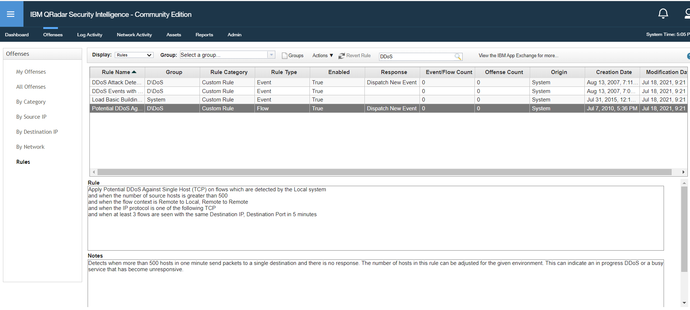
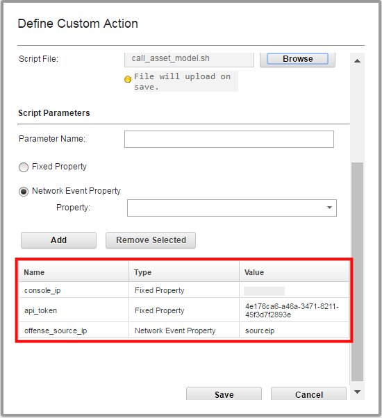
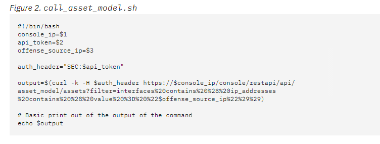
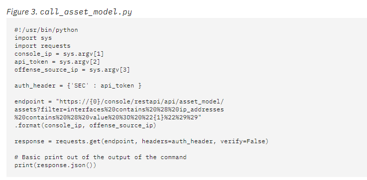
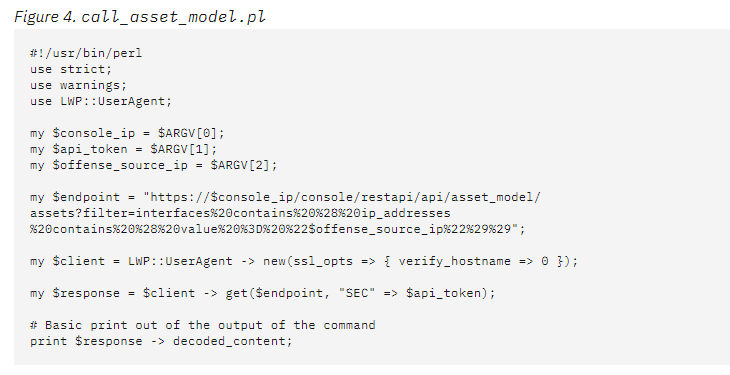

Exercise 1.4 - Executing the first IBM QRadar Remediation
Objectives
The objective of this exercise is to introduce you to some actual remediation using IBM QRadar and Ansible Automation. By the end of this exercise, you will We will give you access to a workshop environment for thhave executed an Ansible playbook to remediate one or more security events and offenses you observe wit the use of QRadar.
IBM QRadar Lab Environment
To showcase how to automate a SIEM in a security environment, this lab contains a IBM QRadar SIEM, community edition.
The SIEM can be accessed via web UI and via REST API. In this lab the playbooks we write will be interacting with the API in the background. All actions will be verified in the web UI.
Step 1 - Access the web UI
Have a first look at the SIEM, and verify that it is actually working. Point your web browser towards https://<qradar-IP>, where <qradar-IP> is the IP address for the qradar entry in your siem section
of your inventory. Next you will be faced with a warning that the certificate is unsecure since it is self-signed. Please accept this and
proceed.
Note
In a production environment, accepting a insecure certificate would not be an option. Since the lab setup is only short lived and solely serves a demo purpose we accept the risk in this case.
In the login field, provide the username admin and the password Ansible1! if not provided otherwise. Press the Login button.
You are now viewing the IBM QRadar main web interface.

To get an idea of QRadar and the basic concepts, let’s have a short look at the interface: in the upper part there is a navigation bar with multiple entry points into the main parts of QRadar.
- Dashboard, providing a central overview
- Offenses, messages or events generated by a monitored condition
- Log Activity, showing collected events from log sources
- Network Activity, network traffic communication between certain hosts
- Assets, automatically created profiles of network devices and hosts in your environment
- Reports, customized or standard reports to, well, report what happens in your environment
For the purpose of the demo, we will have a closer look at the Offenses: click on the menu item. In the new window, you will see a navigation bar on the left side to filter the offenses.

Note
Since this is a demo environment, it is likely that the list of offenses is currently empty.
Offenses are messages or events generated based upon findings in log messages or network traffic, like a malicious log line. QRadar triggers offenses based on rules: the rules describe conditions, and when a condition is met, the offense is the result.
To say it with the words of the official documentation:
Rules, sometimes called correlation rules are applied to events, flows, or offenses to search for or detect anomalies. If all the conditions of a test are met, the rule generates response. (QRadar documentation)
In a productive environment it is common to create more and more custom rules over time. But for now, let’s have a look at the rules
which are already installed on the system: in the Offenses window, on the left side in the navigation bar, click on
Rules. A long list of rules is displayed. In the search bar on top of this list, enter the following search term:
DDoS Hit enter afterwards to filter the list.
The list is filtered, and only shows few rules which are related to DDOS.

Click the one called “Potential DDoS Against Single Host (TCP)”, note that it is enabled. This will be relevant later in this exercise.
Step 2 - Create a QRadar Custom Action Script
Incident Remedition happens in QRadar when some events create an offense, and we do something about it. We can attach scripts to custom rules to do specific actions in response to network events. Use the Custom Action window to manage custom action scripts. Use custom actions to select or define the value that is passed to the script and the resulting action.
For example, you can write a script to create a firewall rule that blocks a source IP address from your network in response to a rule that is triggered by a defined number of failed login attempts.
The following examples are custom actions that are the outcomes of passing values to a script:
- Block users and domains.
- Initiate work flows and updates in external systems.
- Re-start existing services that have stopped or crashed.
- Disables a user account on suspicious privileged activity
As a matter of fact, we can remediate all these QRadar Use Cases
Custom actions work best with low volume custom rule events and with custom rules that have a low response limiter value.
This does not come defaulted in Qradar, to use this capability, a Custom Action Script needs to be created and a Custom Rule can be configured to fire the Custom Action Script. When the Rule is triggered, there will be no clear indication that the Custom Action Script is running. But we can test the script.
The purpose of the provided sample script is to write a file named test.txt each time all rule tests are matched in a sample rule.
- Create a file with a .sh extension using the provided sample script:
#!/bin/bash datetime="$(date)" echo " Custom Action Script Test Time: $datetime" >> /home/customactionuser/test.txt echo "Text written to /home/customactionuser/test.txt?" - Log in to the QRadar user interface and click the Admin tab.
- Under Custom Action, click Define Custom Action.
- To upload your scripts, click Add.
- Type a descriptive name for the custom action.
- Scroll down to Script configuration and Select Interpreter: Bash.
- Click Browse and locate the .sh file.
- Scroll to the bottom of the Define Custom Action window > click Save.
- Click Deploy Changes.
Step 3 - Edit or create a rule to trigger your custom action
- Log in to the QRadar user interface.
- Click Offense tab > Rules.
- Locate or create a Custom Rule in the Rule Wizard that can be triggered easily.
Tip: An example rule to test a custom action might be to use an authentication event from your existing log sources or you could use a specific QID, such as the Offense Created QID (28250369) to test your custom action. - Edit the Rule to add the Host IP and a criteria such as successful login.
Example of a rule.

- Click Next to configure Rule Responses
- Check the box next to 'Execute Custom Action'
- Click the newly created Custom Action Script in the 'Custom Action to execute' drop down box.

Step 4- Confirm your custom action script triggers
Either by using "Test Execution" in the Define Actions window, or by confirming the Custom Rule has been triggered, verify the test file is created or updated:
To test your custom action in the user interface- Click the Admin tab.
- Scroll to down to Custom Actions.
- Click Define Actions.
- Highlight the test script.
- Click Test Execution > Execute.

- Create an event to cause the custom rule to trigger.
- If you have your own environment, use SSH to log in to the Console as the root user. You can't do this with the Lab environment, as you do not have root ssh access
- To enter the shell to see the folder customactionuser use the chroot command:
chroot --userspec=customactionuser /opt/qradar/bin/ca_jail/ - Use the ls command to see if the file exists:
ls -lh /home/customactionuser/ - While in the chroot'ed shell, the file test.txt should be seen.
chroot --userspec=customactionuser /opt/qradar/bin/ca_jail/ $ ls /home/customactionuser/ test.txt?
The file test.txt should exist in the /home/customactionuser/ directory. The purpose of the sample script is to write test.txt each time the rule response is triggered by a rule.
Step 5- Passing parameters to a custom action script
The following information is taken from this link. Go there if need to copy and paste the scripts as text.
We are not going to exercise these scripts on this Lab, therefore the following is just FYI.
The Custom Action script functionality in QRadar was intended to allow admins to generate rule responses based off of data ingested in QRadar. However, QRadar prevents scripts taking actions on the box that would cause performance issues or to make changes on the appliance. All Custom Actions run within a jailshell, so you can pass data out of QRadar by setting parameters.
The Scripts can be written in Bash, Python, and Perl. Here we how how to pass parameters to custom action scripts.
The following simple sample scripts show how to query the asset model API for an asset with the supplied offense source IP address. For the sake of this example, the scripts output the JSON that is returned by the endpoint.
The scripts require three parameters:
- Console IP address.
- API token.
- Offense source IP address.
These parameters are configured in the Define Custom Action window Script Parameters area:
Each parameter is passed to the script in the order in which it was added in the Define Custom Action window. In this case:
- console_ip.
- api_token.
- offense_source_ip.
The API token was covered in the prev. exercise, we said you need to configure QRadar for the API to be accessible, and that a token and password is created following the steps in the IBM X-Force Exchange API Documentation
The variables that are defined at the beginning of each of the sample scripts use the sample parameter names that were added in the Define Custom Action window.   
Step 6 - QRadar modules and Ansible collections
On the most basic level, Ansible automation performs tasks. Those tasks execute modules, which usually work on the corresponding targets, like an API endpoint of a special device or program.
Ansible comes with a lot of modules included, but as of the time of writing, Ansible does not ship QRadar modules out of the box. Instead, those modules are provided as Ansible collections:
Collections are a distribution format for Ansible content. They can be used to package and distribute playbooks, roles, modules, and plugins. You can publish and use collections through Ansible Galaxy.
Collections follow a simple directory structure to provide Ansible content. If you feel reminded of Ansible roles here, this has a reason: Collections are built upon the idea of roles, but extend the concept to general Ansible content management. The collection for IBM QRadar can be found in the ansible-security project.
As roles, collections also need to be installed first before they can be used. They are installed on the machine executing Ansible, in the case of the lab this is the control host.
Let’s install the collection for QRadar modules on your control host. In your VS Code online editor open a new terminal. Execute the
command ansible-galaxy collection --help to verify that the collections
function is working properly:
[student<X>@ansible ~]$ ansible-galaxy collection --help
usage: ansible-galaxy collection [-h] COLLECTION_ACTION ...
positional arguments:
COLLECTION_ACTION
init Initialize new collection with the base structure of a
collection.
build Build an Ansible collection artifact that can be publish
to Ansible Galaxy.
publish Publish a collection artifact to Ansible Galaxy.
install Install collection(s) from file(s), URL(s) or Ansible
Galaxy
optional arguments:
-h, --help show this help message and exit
With that in mind, we can now install the collection ibm.qradar:
[student<X>@ansible ~]$ ansible-galaxy collection install ibm.qradar
Process install dependency map
Starting collection install process
Installing 'ibm.qradar:0.0.1' to '/home/student<X>/.ansible/collections/ansible_collections/ibm/qradar'
Verify that the collection was installed properly:
[student<X>@ansible ~]$ ls -1 ~/.ansible/collections/ansible_collections/ibm/qradar
docs
LICENSE
plugins
README.md
tests
All required files are there - especially the directory plugins/modules
which contains the actual modules.
With the collection in place, we can now start to write our playbook.
Note
If you want to try this at home: please note that this collection command requires at least Ansible version 2.9!
Step 7 - First example playbook
In our first example to interface with QRadar we are going to enable/disable a rule. It is a rather small but common change and shows how Ansible and QRadar interact. We will do this in two steps: first we find the rule we want to change, afterwards we apply the change.
In your VS Code online editor, create a new file, find_qradar_rule.yml in
the home directory of your user. Add the name and target hosts, here qradar.
---
- name: Find QRadar rule state
hosts: qradar
We also want to use the collections we just added. Collections can be referenced at multiple places, for example at task level as well as play level. We will reference them at play level to be able to write multiple tasks based on them later on.
---
- name: Find QRadar rule state
hosts: qradar
collections:
- ibm.qradar
Next we bring in the actual tasks. The REST API of QRadar is desgined in a way that we first have to search for a proper rule to find
out its ID, and then deactive the rule by referencing the given ID. For the sake of this lab, let’s say the rule which creates messages
based on a suspected DDoS attack. In the last section we already had a look at the QRadar rules via Offenses >
Rules, and filitered them for the term DDoS. In the filtered list, note the first rule shown there,
“Potential DDoS Against Single Host (TCP)”. We will use this string to search for the role using the module qradar_rule_info:
---
- name: Find QRadar rule state
hosts: qradar
collections:
- ibm.qradar
tasks:
- name: get info about qradar rule
qradar_rule_info:
name: "DDoS Attack Detected"
This module returns a lot of information, among those the ID we need to actually disable the role. Let’s register the returned
information into a variable with the help of the register keyword. It is
directly used with the module itself. This enables us to use the content of the variable in the next task.
---
- name: Find QRadar rule state
hosts: qradar
collections:
- ibm.qradar
tasks:
- name: get info about qradar rule
qradar_rule_info:
name: "DDoS Attack Detected"
register: rule_info
So how do the information returned by the module actually look like? How about we just output the variable rule_info? For that, add a debug
task which can be used to output variables during a playbook run:
---
- name: Find QRadar rule state
hosts: qradar
collections:
- ibm.qradar
tasks:
- name: get info about qradar rule
qradar_rule_info:
name: "Potential DDoS Against Single Host (TCP)"
register: rule_info
- name: output returned rule_info
debug:
var: rule_info
Note
The parameter “var” of the debug module does expect a variable name already - for that reason curly brackets and quotation marks are not needed like usually when you reference a variable.
Both tasks only collect and output data, they do not change anything. Let’s quickly run the playbook to look at the returned data:
[student<X>@ansible ansible-files]$ ansible-playbook find_qradar_rule.yml
PLAY [Find QRadar rule state] ***************************************************
TASK [Gathering Facts] ************************************************************
ok: [qradar]
TASK [get info about qradar rule] *************************************************
ok: [qradar]
TASK [output returned rule_info] **************************************************
ok: [qradar] => {
"rule_info": {
"changed": false,
"failed": false,
"rules": [
{
"average_capacity": 0,
"base_capacity": 0,
"base_host_id": 0,
"capacity_timestamp": 0,
"creation_date": 1278524200032,
"enabled": true,
"id": 100065,
"identifier": "SYSTEM-1520",
"linked_rule_identifier": null,
"modification_date": 1566928030130,
"name": "Potential DDoS Against Single Host (TCP)",
"origin": "SYSTEM",
"owner": "admin",
"type": "FLOW"
}
]
}
}
PLAY RECAP ************************************************************************
qradar : ok=3 changed=0 unreachable=0 failed=0 skipped=0 rescued=0 ignored=0
As you see, the debug task output returned rule_info shows the content of
the variable, and thus the content which was returned by the module qradar_rule_info. Note among those return data the key id, in this example with the value 100065. This is the key we need.
Note
The key id might be different in your case.
How do we get the key when it is in this structure? First, it is in the segment rules of the variable, which we can access via rule_info.rules. Inside of rules
there is actually a list (note the curly brackets), but with only one entry - so we access it with rule_info.rules[0]. And from within the list entry we can access each key individually via
its name: rule_info.rules[0]['id'].
So, let’s write a new playbook where we provide this as a value to the module which can disable the rule, qradar_rule.
In your VS Code online editor, create a new file, change_qradar_rule.yml in
the home directory /home/student<X>/. Add the name and target hosts, here
qradar.
---
- name: Change QRadar rule state
hosts: qradar
collections:
- ibm.qradar
tasks:
- name: get info about qradar rule
qradar_rule_info:
name: "Potential DDoS Against Single Host (TCP)"
register: rule_info
- name: disable rule by id
qradar_rule:
state: disabled
id: "{{ rule_info.rules[0]['id'] }}"
The playbook is now complete: it queries QRadar for the list of rules, and deactives the one we are looking for.
Step 8 - Run the playbook
After we completed the playbook, let’s execute it:
[student<X>@ansible ansible-files]$ ansible-playbook change_qradar_rule.yml
PLAY [Change QRadar rule state] ***************************************************
TASK [Gathering Facts] ************************************************************
ok: [qradar]
TASK [get info about qradar rule] *************************************************
ok: [qradar]
TASK [disable rule by id] *********************************************************
changed: [qradar]
PLAY RECAP ************************************************************************
qradar : ok=3 changed=1 unreachable=0 failed=0 skipped=0 rescued=0 ignored=0
As you can see, the playbook denotes a change: the rule was changed. Run the playbook again - it does not report a change anymore, since the rule is now already disabled.
Step 9 - Verfiy changes in UI
To verify that Ansible indeed changed something, we go back to the UI of QRadar. Open the QRadar IP in your web browser. Click on the
Offenses tab, and from there on the left side click on Rules. The long list of rules is displayed. In
the search bar on top of this list, enter the following search term: DDoS Hit
enter to filter the list, so that it only shows rules which are related to DDOS. At the end, note the rule regarding potential DDOS
attacks, and check the state in the Enabled column: it is set to False!

You are done with the exercise. You can now turn back to the list of exercises